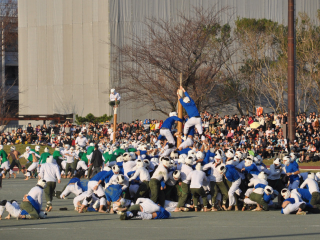

(https://sportsaspire.com/bo-taoshi)
Students from 2nd and 3rd year of high school are looking forward to the chance to go out and fight. Students are divided into 8 groups and each group is color coded. You must win three times in a row to be a winner.
(https://www.nytimes.com/2018/08/22/sports/botaoshi-japan.html)

However, many schools in Japan stopped playing this game because it was dangerous.
Bo-taoshi has been practiced for a long time at the Naval Academy of the Imperial Japanese Navy to foster the fighting spirit of students. It is one of the well-known events at the National Defense Academy's opening commemorative festival, as students fight fiercely for the honor of their battalions to win the championship.
(https://www.nda.ac.jp/ed/Festival/event.html)
The National Defense Academy’s autumn festival, the ‘Founding of the Academy Memorial Festival,’ is a very important event for the academy. On the day of the event, the academy will be open to the public and anyone can walk around campus.
The main event is of course Bo-taoshi, the specialty of the National Defense Academy!
Many people visit just for the sake of watching it!
(https://cooljapan-videos.com/en/articles/avprmo9z)

For this year, the date will be on Nov 17th 14: 45 .
At the athletics stadium (cancelled in stormy weather)
(https://www.nda.ac.jp/ed/Festival/event.html)